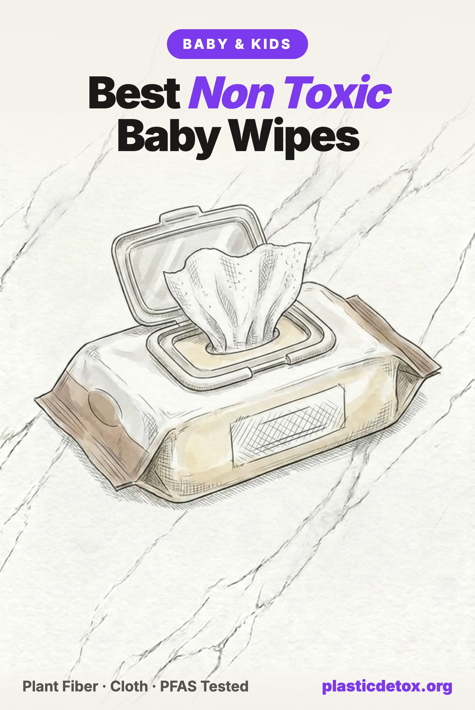

Best Non Toxic Baby Wipes: Plastic Free Picks and the Brands Facing Lawsuits (2026)

The 30 Second Summary
- A baby gets wiped roughly 10,000 times in the first year alone. Wipes are a leave on product, nothing gets rinsed off, and they are used on genital skin, faces, and hands, which makes the wipe one of the highest contact products in the nursery after the diaper itself.
- The wipe itself is usually plastic. Conventional wipes are nonwoven polyester or polypropylene fabric, which is why the EU makes them carry a turtle warning label. Plant fiber wipes, made from viscose, lyocell, wood pulp, bamboo, or cotton, exist at every price.
- Genuinely good news on PFAS: Consumer Reports tested 19 wipe products for 30 PFAS compounds in June 2026 and found none, in any of them. Wipes are one of the few baby categories where the testing came back clean across the board.
- Best overall: Coterie. Six EWG Verified ingredients on a plastic free lyocell cloth, and the strongest owner reviews of anything here. HealthyBaby is the only wipe certified by both EWG and MADE SAFE, and Caboo is the best value. The purist pick is Natracare, the only certified organic cotton wipe.
- WaterWipes moved to our caution list. The two ingredient label is real, but the brand faces two 2025 lawsuits alleging microplastics in wipes marketed as plastic free, and its grapefruit seed extract carries a disclosed trace of a synthetic preservative.
- The preservative history matters. A wipe preservative called MI caused enough severe child rashes that the EU banned it from leave on products, and France says phenoxyethanol should not touch the diaper area at all. Both still appear in wipes sold elsewhere, so the ingredient list is still worth ten seconds.
Wipes are the product parents think about least and use most. Estimates from the brands themselves put the count at 6,000 to 13,000 wipes in the first year, fifteen to twenty a day, and the habit runs for years past potty training as wipes migrate to faces, hands, and high chairs. Every one of those passes is a leave on application. Nothing gets rinsed. Whatever is in the liquid stays on the skin, and whatever the cloth is made of gets dragged across it.
Both halves of that deserve more scrutiny than the category gets. The cloth of a conventional wipe is plastic, spun polyester or polypropylene, close cousin to the fabrics we cover in microplastics in clothing and laundry. And the liquid is a preservative chemistry problem: a wet stack of cloth in a plastic pouch is a petri dish, so every wipe needs something keeping mold and bacteria down, and the industry's choices over the years have ranged from fine to genuinely harmful.
This guide covers what wipes are actually made of, what independent testing found, the wipes we would buy, and the clean looking brands carrying lawsuits, recalls, or ingredients their packaging does not advertise. It pairs with our guide to the best non toxic diapers, which covers the other half of every diaper change, and our new review of diaper rash creams and baby balms, which covers what goes on after the wipe. If you are setting up a whole nursery, start with the non toxic baby registry.
1. Why Wipes Are a High Exposure Product
The exposure math on wipes looks a lot like the diaper math: not one dramatic dose, but a small dose multiplied by an enormous count, on the most permeable skin a human ever has.
2. The Wipe Itself Is Usually Plastic
A baby wipe is a nonwoven fabric: loose fibers bonded into a sheet with water jets, heat, or adhesive. The question is what the fibers are. For most of the market's history the answer has been polyester and polypropylene, the same polymers as a fleece jacket and a yogurt cup, sometimes blended with viscose or wood pulp for softness and absorbency.
This is not a secret, it is just invisible on the front of the pack. It is visible in EU law: since July 2021, wet wipes containing plastic sold in Europe must carry a standardized turtle marking on the front of the packaging telling consumers the product contains plastic. Wipes made only of viscose or lyocell are exempt, because those are regenerated cellulose, plant material, not petroleum polymer. The turtle label is the closest thing the category has to an honest materials disclosure, and the US has no equivalent.
The shedding question has real data behind it. A 2020 study in Water Research documented wet wipes as a direct source of white microplastic fibers in the marine environment, and 2026 laboratory work simulating river conditions found that every plastic based wipe tested shed microplastic fibers as the fabric degraded, while cellulose wipes broke down quickly. That is an environmental finding first, but it describes the same fabric being dragged across a baby's skin sixteen times a day, and it is the reason a site about plastic exposure cares what a wipe is spun from.
Where the big brands stand: Huggies describes its wipes as 70 percent or more plant based by weight, which is a precise way of saying up to about 30 percent plastic fiber. Pampers has historically used modified cellulose with polypropylene, with some newer lines moving to fully plant based cloth. Kirkland Signature wipes use Tencel lyocell. And WaterWipes, to its credit, switched from an 80 percent polyester blend to 100 percent viscose in 2022, though as section 6 covers, the brand is now in court over whether "plastic free" holds up in the finished product.
3. What Is in the Liquid
The liquid in a wipe is mostly water, usually more than 95 percent. The rest is a cleanser, something soothing, and, unavoidably, a preservative system. A sealed pouch of wet cloth sitting at bathroom temperature for months is an ideal mold and bacteria habitat, and the category's worst moments have come from both directions: preservatives strong enough to hurt children, and preservation weak enough to let microbes through.
The MI rash epidemic
Methylisothiazolinone, MI, is the cautionary tale. Through the early 2010s it preserved a large share of wipes on the shelf. Dermatologists began documenting severe, treatment resistant rashes on children's buttocks and faces that resolved the moment the wipes stopped, and published case series pinned the pattern directly to MI. The American Contact Dermatitis Society named it Contact Allergen of the Year in 2013. Kimberly-Clark moved all Huggies wipes off MI in 2014, and the EU banned it from every leave on cosmetic in 2017, wipes included, after its scientific committee concluded no safe leave on concentration had been demonstrated. In the US it remains legal, just unfashionable. It still turns up in imported and bargain wipes, which is reason enough to scan a label for methylisothiazolinone before the price tag.
Phenoxyethanol and the diaper area
Phenoxyethanol is the preservative that replaced parabens across the industry, and it sits at the center of a genuine regulatory disagreement. France's medicines agency has recommended since 2012 that it not be used in products intended for the diaper area at all, capped it at 0.4 percent for children under three elsewhere, extended the recommendation explicitly to wipes in 2017, and since 2019 requires leave on products containing it to carry a label stating they should not be used on the nappy area of children three and under. The EU's scientific committee reviewed the same evidence and considers phenoxyethanol safe at up to 1 percent for all ages. The FDA has warned about it only in one acute context, a nipple cream where it was implicated in depressed nervous system function in nursing infants.
Our position follows from what a wipe is: a leave on product, on the exact skin France says to keep it away from, twenty times a day. Every pick in section 5 is phenoxyethanol free, so the disagreement costs you nothing to sidestep. The same scan catches the small stuff: formaldehyde releasing preservatives like bronopol and DMDM hydantoin still appear in a minority of wipe formulas, and undisclosed "fragrance" on a leave on baby product is a habit worth refusing on principle, for the reasons we cover in microplastics in cosmetics and personal care.
4. What Independent Testing Found
The PFAS all clear
In June 2026 Consumer Reports published the most useful lab data this category has: 19 wipe products from 18 companies, tested for 30 individual PFAS compounds using an EPA drinking water method with a detection limit of 2.3 nanograms per sample. The result was a clean sweep. No detectable PFAS in any product tested, and the list covered the whole market: Pampers, Huggies, Kirkland Signature, Parent's Choice, WaterWipes, Honest, Seventh Generation, and every clean brand we recommend below, including Coterie, HealthyBaby, Caboo, and Natracare.
That deserves to be said plainly, because it is rare. When the same question was asked of diapers, an EPA certified lab found organic fluorine in 23 percent of products tested, a story we cover in the diapers guide. Wipes came back clean. Two lawsuits, covered in section 6, allege trace PFAS in specific wipes at levels far below what the Consumer Reports method would flag, and those cases matter for what they say about marketing claims. But on the central question of whether wipes are a meaningful PFAS exposure, the best available answer is no.
What the ingredient screens found
The other useful data set is older but broader. In late 2023 Consumer Reports worked with the nonprofit MADE SAFE to screen wipe brands at the ingredient level, and found that 7 of 15 brands reviewed carried concerning or unclear ingredients, flagging quaternary ammonium disinfectants, which are skin and airway sensitizers, and ethoxylated ingredients that can carry manufacturing contaminants like 1,4-dioxane, which never appear on a label. Its recommended list matches ours closely: HealthyBaby, Caboo, and Honest all cleared the screen. Mamavation's wipes review, which ranks by ingredients rather than lab results, lands in the same place, with Natracare and Jackson Reece among its best rated and most conventional brands failing on preservatives and fragrance.
One honest caveat about certifications, from our companion review of diaper creams: EWG Verified and MADE SAFE audit what a formula contains, not what contaminates it. In diaper creams, two EWG Verified products tested positive for lead, because the certification never looked. That failure mode matters less for wipes, which are nearly all water and contain no mineral powders, but it is the reason we treat certifications as one input rather than the verdict.
5. Best Non Toxic Baby Wipes
Four picks, our top choice first. Every one uses a plant fiber cloth with no plastic fiber, a phenoxyethanol free and fragrance free formula, and came through the 2026 Consumer Reports PFAS testing with nothing detected.

Coterie The Wipe
EWG Verified formula of six ingredients: 99 percent water plus sodium benzoate, caprylyl glycol, citric acid, glycerin, and decyl glucoside. Cloth is VEOCEL lyocell and viscose, plastic free and biodegradable. National Eczema Association seal. No PFAS detected in 2026 Consumer Reports testing. Thick enough that one wipe does most changes, at the highest cost per wipe here.
View →
HealthyBaby Wet Wipes
The only wipe with both EWG Verified and MADE SAFE certification. Cloth is FSC certified wood pulp fabric, no plastic fiber. Formula is water, aloe, chamomile, honeysuckle extract, glycerin, vitamin E, and a gluconic acid and sodium benzoate preservative system. Fragrance free. No PFAS detected in 2026 Consumer Reports testing, and a Consumer Reports recommended wipe in its 2023 ingredient review.
View →
Caboo Tree Free Wipes
MADE SAFE certified, on a bamboo viscose cloth with no plastic fiber. Unscented, 99.7 percent naturally derived, primarily water and glycerin, no parabens, phthalates, or formaldehyde releasers. No PFAS detected in 2026 Consumer Reports testing and a recommended pick in its 2023 ingredient review. The largest owner review base of our picks and the lowest cost per wipe.
View →
Natracare Organic Baby Wipes
The only wipe here made from certified organic cotton, GOTS via the Soil Association, EWG Verified, and a Mamavation best rated wipe. Fully compostable including the packaging. The lotion uses apricot, sweet almond, and chamomile with essential oils, so it carries natural limonene and linalool, a consideration for the most reactive skin. No PFAS detected in 2026 Consumer Reports testing.
View →Worth knowing about, without a card: Jackson Reece, a UK brand on wood pulp cloth with a phenoxyethanol free formula, is another Mamavation best rated wipe and a solid choice when you find it in stock, though its US owner reviews run noticeably behind the four above.
6. Brands That Look Clean but Need Caution
Every brand below is bought because it reads as the clean or trusted choice, and each has something in its record the packaging does not show. Several dispute the claims against them, and inclusion here is not a finding of harm. Our rule from the diapers guide applies unchanged: when equally clean alternatives cost the same, an unresolved question is reason enough to pick something else.
WaterWipes
The cleanest label in the category, 99.9 percent water plus grapefruit seed extract, and a genuine improvement story: the cloth went from 80 percent polyester to 100 percent viscose in 2022. But the label itself discloses that the grapefruit seed extract carries a trace of benzalkonium chloride, a synthetic preservative that published analyses have repeatedly found as a major constituent of commercial grapefruit seed extract. In 2025 the brand was sued twice, by a consumer nonprofit and in a California class action, alleging that laboratory testing found microplastics in wipes marketed as plastic free and the world's purest. Earlier, in 2022, the National Advertising Division twice recommended it discontinue superiority claims about diaper rash.
Verdict: allegations, not findings, and the wipes tested PFAS non detect. But when a product's entire premise is purity, and this site's entire premise is microplastics, open litigation on exactly that question moves it off the picks list while the cases resolve.
Kirkland Signature (Costco)
The value king, on a genuinely good Tencel lyocell cloth. A federal class action alleges the fragrance free wipes marketed as naturally derived contained 3.7 parts per billion PFAS, and the case survived Costco's motion to dismiss. For scale, Consumer Reports' 2026 testing found nothing in Kirkland wipes at its detection threshold, so the alleged level is trace. The suit is about the gap between the word natural and the test result, which is exactly the gap this article exists to close.
Verdict: not a contamination emergency, but with Caboo priced close and MADE SAFE certified, the question costs nothing to avoid.
Huggies (Kimberly-Clark)
The cloth is up to about 30 percent polypropylene by the brand's own plant based math. Huggies wipes preserved with MI were part of the child rash epidemic before the company removed it in 2014. A class action alleged Natural Care wipes marketed as natural contained synthetics including phenoxyethanol, and a 2024 suit alleges Simply Clean wipes contained 305 parts per trillion PFAS. Current formulas are far better than a decade ago.
Verdict: a plastic cloth and a history of the word natural doing heavy lifting. Fine in a pinch, not a first choice.
Pampers wipes (Procter & Gamble)
Sensitive, the best selling wipe in America, is preserved with phenoxyethanol, the ingredient France says should not be used on the diaper area of children under three, plus PEG derivatives of the class that can carry 1,4-dioxane. A class action alleged the Natural Clean line was not natural for the same reasons. Some newer Pampers lines have moved to plant based cloth, which is progress on the fabric half.
Verdict: the exact product the French warning label was written for. Plenty of alternatives exist without the asterisk.
The Honest Company
Today's wipe is decent: plant based cloth, PFAS non detect in 2026, and a spot on Consumer Reports' cleaner list in 2023. The record is the caution: a 2017 nationwide recall of wipes for visible mold, and the same pattern of natural marketing litigation we documented on the diapers side, settled without admission of fault.
Verdict: fine on materials today, unreliable on adjectives, and the recall history earns a look at the lot before you stock up.
Babyganics
A 2016 class action alleged the brand's organic, natural, and mineral based marketing, across products including wipes, covered conventional synthetic formulas. It settled for 2.2 million dollars with agreed label changes. The wipes themselves are unremarkable rather than hazardous.
Verdict: the brand name is the product. Read the ingredient panel as if the front of the pack were blank.
Eco Pea Co
A small bamboo wipe brand with strong eco marketing whose own published ingredient list includes polyhexamethylene biguanide, a synthetic antimicrobial polymer, and a silicone antifoam emulsion. Neither is a scandal. Both are exactly what the branding promises are not there.
Verdict: the bamboo cloth is real, the formula does not match the label's spirit. Caboo does bamboo without the surprises.
7. Cloth Wipes and Plain Water
The only wipe with nothing to vet is a piece of cotton and some warm water. Reusable cloth wipes are cheap flannel squares: wet a few at changing time, wipe, and drop them in the same pail as cloth diapers or a small wet bag, then wash. There is no preservative system because there is no pouch of standing liquid, no fragrance, no plastic fiber, and nothing left on the skin but water. Pediatric guidance has always been comfortable with plain water cleaning for normal changes, and this is the cheapest per change option in the entire category once the upfront pack is bought.
The practical setup most families land on: cloth wipes at home, where warm water is a faucet away, and a pack of clean disposables from section 5 in the diaper bag. That single habit cuts thousands of disposable wipes a year without ever being inconvenient.

One note if you shop around: OsoCozy flannel wipes are the common budget alternative and the wipes themselves are GOTS certified cotton, but the brand's prefolds returned a 20 ppm organic fluorine result in the 2023 diaper testing we covered in the diapers guide, so we point cloth budgets at Marley's Monsters first.
8. How to Vet a Wipe Brand Yourself
Brands reformulate, and this category's history is one of quiet ingredient swaps. Five checks, in order of how much they tell you.
You can shortcut steps four and five for hundreds of brands with our Product Check tool. For the rest of the changing table, our diaper cream and baby balm guide covers what goes on after the wipe, the complete non toxic baby and toddler guide works through every other category on the same evidence standard, and Baby and Kids 101 is the short version if you are starting from zero.
9. Frequently Asked Questions
What are the safest baby wipes?
Coterie is our best overall pick: an EWG Verified formula of six ingredients on a plastic free lyocell and viscose cloth, with no PFAS detected in Consumer Reports 2026 testing and the strongest owner reviews in the category. HealthyBaby is the only wipe with both EWG Verified and MADE SAFE certification, on an FSC certified wood pulp cloth. Caboo is the best value clean wipe, a MADE SAFE certified bamboo wipe with the largest review base of our picks. Natracare is the purist option, the only wipe made from certified organic cotton, though its lotion includes essential oils. The genuinely zero exposure option is reusable cotton cloth wipes with plain water.
Do baby wipes contain PFAS?
The best available testing says mostly no. In June 2026 Consumer Reports tested 19 wipe products from 18 companies for 30 individual PFAS compounds using an EPA drinking water method and found no detectable PFAS in any of them, including Pampers, Huggies, Kirkland, WaterWipes, and every clean brand we recommend. Two lawsuits allege trace PFAS in specific wipes, 3.7 parts per billion in Kirkland Signature wipes and 305 parts per trillion in Huggies Simply Clean, levels below what the Consumer Reports method would flag. Unlike diapers, where lab testing found organic fluorine in 23 percent of products, wipes look like one of the cleaner categories on this specific question.
Are baby wipes made of plastic?
Most conventional wipes are. The cloth of a standard wipe is a nonwoven fabric spun from polyester or polypropylene, often blended with plant fiber, which is why the EU requires wet wipes containing plastic to carry a turtle warning label on the front of the pack. Huggies describes its wipes as 70 percent or more plant based by weight, which means up to about 30 percent is plastic fiber. Plant fiber alternatives exist at every price point: viscose, lyocell, wood pulp, bamboo, and organic cotton wipes contain no plastic fiber at all, and river studies show cellulose wipes break down while every plastic based wipe tested shed microplastic fibers.
Are WaterWipes really just water?
The label is honest but incomplete. WaterWipes are 99.9 percent water plus grapefruit seed extract, and the label itself notes the extract contains a trace of benzalkonium chloride, a synthetic preservative that published chemical analyses have repeatedly found as a major constituent of commercial grapefruit seed extract. The cloth switched from an 80 percent polyester blend to 100 percent viscose in 2022. Since 2025 the brand has faced two lawsuits, one from a consumer group and one class action, alleging that lab testing found microplastics in wipes marketed as plastic free. Nothing has been proven in court, but for a product whose entire pitch is purity, that is enough open questions that we list WaterWipes as a caution rather than a pick.
Should I avoid phenoxyethanol in baby wipes?
For the diaper area, yes. The French medicines agency has recommended since 2012 that phenoxyethanol not be used in products for the diaper area at all, limited it to 0.4 percent in other products for children under three, extended the recommendation to wipes in 2017, and in 2019 required leave on products containing it to carry a label saying not for the nappy area of children three and under. The EU scientific committee disagrees and considers it safe up to 1 percent, so it remains legal and common. Wipes are a leave on product used dozens of times a day on the most absorbent skin on the body, so we side with the cautious position: there are enough phenoxyethanol free wipes that there is no reason to buy one that needs the French warning label.
What wipe ingredient caused allergic rashes in children?
Methylisothiazolinone, a preservative known as MI. Dermatologists traced a wave of severe, treatment resistant diaper area and facial rashes in children directly to MI in baby wipes, with published case series showing the rashes resolved as soon as the wipes stopped. The American Contact Dermatitis Society named MI its Contact Allergen of the Year in 2013, major brands including Huggies removed it from wipes in 2014, and the EU banned it from all leave on cosmetics in 2017. It is rare in wipes sold today, but the episode is the reason to read a wipe's preservative system before trusting the front of the pack.
Can I just use cloth wipes and water?
Yes, and it is the only option with literally nothing to vet. A stack of organic cotton flannel wipes, wet with plain warm water at changing time, cleans a normal diaper change as well as a disposable wipe, washes with the regular laundry, and involves no preservatives, no fragrance, and no plastic fiber. It pairs naturally with cloth diapering but works fine alongside disposables too. Keep a small pack of clean disposable wipes for the diaper bag and use cloth at home, and you cut the wipe count by thousands a year.
Related Articles
- Best Non Toxic Diapers: What Tested Clean and What to Watch
Lab testing found PFAS markers in 23 percent of diapers, including eco brands. The picks that tested clean. - Best Non Toxic Diaper Rash Creams and Baby Balms
Independent testing found lead in every zinc oxide diaper cream tested. The one balm that tested clean. - The Non Toxic Baby Registry
141 vetted picks across feeding, sleep, diapers, bath, and travel. No sponsored placements. - Top 100 Baby and Kids Products on Amazon, Reviewed
The best selling baby products rated skip, use carefully, or good choice against the evidence. - What Are PFAS?
Where forever chemicals come from, what they do, and how to cut your exposure.